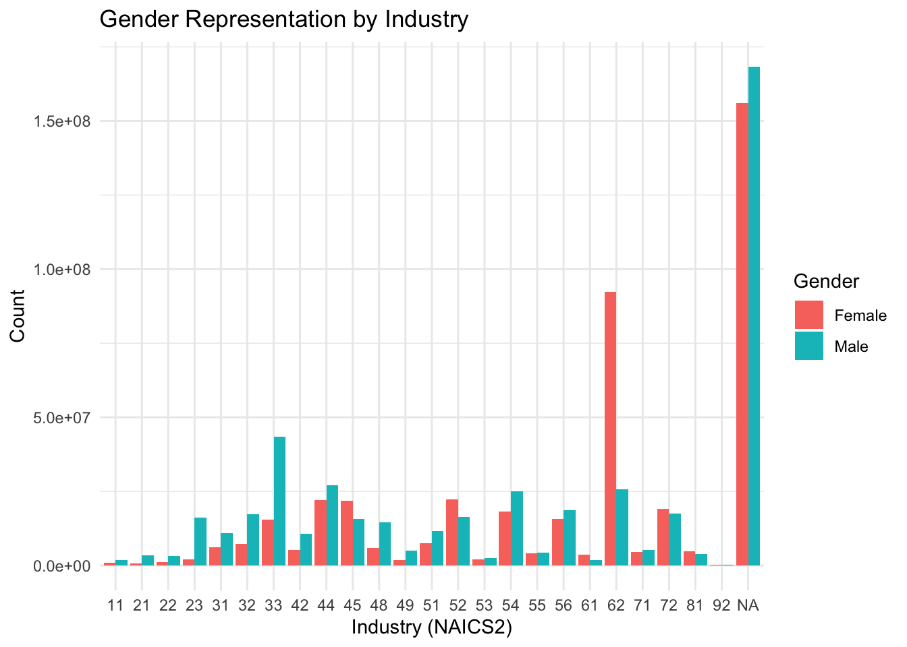

Here we provide a detailed analysis using more sophisticated statistics techniques.
We describe here our detailed data analysis. This page will provide an overview of what questions you addressed, illustrations of relevant aspects of the data with tables and figures, and a statistical model that attempts to answer part of the question. You’ll also reflect on next steps and further analysis.
The audience for this page is someone like your class mates, so you can expect that they have some level of statistical and quantitative sophistication and understand ideas like linear and logistic regression, coefficients, confidence intervals, overfitting, etc.
While the exact number of figures and tables will vary and depend on your analysis, you should target around 5 to 6. An overly long analysis could lead to losing points. If you want you can link back to your blog posts or create separate pages with more details.
The style of this paper should aim to be that of an academic paper. I don’t expect this to be of publication quality but you should keep that aim in mind. Avoid using “we” too frequently, for example “We also found that …”. Describe your methodology and your findings but don’t describe your whole process.
Research Motivation and Questions The primary motivation for this analysis is to better understand the distribution of race and gender within various industries. Specifically, we are interested in the following:
How do race and gender representations vary across different industries, particularly in terms of the workforce count for each racial/ethnic group and gender? What are the relationships between industry type (NAICS2), racial composition, and gender representation? What insights can be derived from regression models explaining gender and race representation across industries? Data Overview The dataset used for this analysis is the 2017 Equal Employment Opportunity (EEO-1) dataset. It contains workforce representation data broken down by race and gender across industries. The analysis focuses on the variables that represent the workforce count by race/ethnicity (White, Black, Hispanic, Asian, Other) and gender (Male, Female) within each industry.
library(dplyr)
Attaching package: 'dplyr'
The following objects are masked from 'package:stats':
filter, lag
The following objects are masked from 'package:base':
intersect, setdiff, setequal, union
Warning: There were 6 warnings in `mutate()`.
The first warning was:
ℹ In argument: `across(...)`.
Caused by warning:
! NAs introduced by coercion
ℹ Run `dplyr::last_dplyr_warnings()` to see the 5 remaining warnings.
This bar chart provides insights into how various racial and ethnic groups are distributed across different industries. It is evident that certain industries, such as healthcare and social assistance, have higher representation of Black and Hispanic workers, while sectors like technology and finance tend to be predominantly composed of White employees.
Gender Representation in the Workforce
Next, we turn our attention to gender representation across industries. We summarize the male and female workforce distribution by industry.
Warning: There were 8 warnings in `mutate()`.
The first warning was:
ℹ In argument: `across(...)`.
Caused by warning:
! NAs introduced by coercion
ℹ Run `dplyr::last_dplyr_warnings()` to see the 7 remaining warnings.
long_data <- workforce_summary %>%pivot_longer(cols = White:Other, names_to ="Race", values_to ="Count")gender_long <- gender_summary %>%pivot_longer(cols = Male:Female, names_to ="Gender", values_to ="Count")ggplot(long_data, aes(x =factor(NAICS2), y = Count, fill = Race)) +geom_bar(stat ="identity", position ="dodge") +theme_minimal() +labs(title ="Workforce Representation by Race/Ethnicity and Industry",x ="Industry (NAICS2)",y ="Workforce Count",fill ="Race/Ethnicity" )
ggplot(gender_long, aes(x =factor(NAICS2), y = Count, fill = Gender)) +geom_bar(stat ="identity", position ="dodge") +theme_minimal() +labs(title ="Gender Representation by Industry",x ="Industry (NAICS2)",y ="Count",fill ="Gender" )

Statistical Modeling: Gender and Race Representation
We apply linear regression models to predict male and female workforce representation based on industry and racial composition. These models help quantify the influence of industry and racial variables on gender representation.
Both models reveal that industry and racial composition significantly influence gender representation. However, the results also highlight some limitations:
Uncertainty in estimates: While the models provide insights, the confidence intervals and p-values suggest some uncertainty in the estimates, especially for smaller industries.
Missing data: The presence of missing values and non-numeric entries in the dataset could skew the results. Further data cleaning and imputation strategies could help improve the models.
Assumptions: The models assume linear relationships between predictors and outcomes, which may not always hold. Nonlinear models or transformations of predictors could be explored for better fit.
Note on Attribution
Here are some different sources and URLs that could be useful for further exploring statistical modeling, workforce diversity, and data analysis techniques:
Understanding Linear Regression
This page offers a detailed overview of linear regression, including assumptions, interpretation of results, and applications in data analysis.
Which variables and relationships are you most interested in?
What questions are you interested in answering?
Provide context for the rest of the page. This will include figures/tables that illustrate aspects of the data of your question.
Modeling and Inference
The page will include some kind of formal statistical model. This could be a linear regression, logistic regression, or another modeling framework.
Explain the ideas and techniques you used to choose the predictors for your model. (Think about including interaction terms and other transformations of your variables.)
Describe the results of your modelling and make sure to give a sense of the uncertainty in your estimates and conclusions.
Explain the flaws and limitations of your analysis
Are there some assumptions that you needed to make that might not hold? Is there other data that would help to answer your questions?
Clarity Figures
Are your figures/tables/results easy to read, informative, without problems like overplotting, hard-to-read labels, etc?
Each figure should provide a key insight. Too many figures or other data summaries can detract from this. (While not a hard limit, around 5 total figures is probably a good target.)
Default lm output and plots are typically not acceptable.
Clarity of Explanations
How well do you explain each figure/result?
Do you provide interpretations that suggest further analysis or explanations for observed phenomenon?
Organization and cleanliness.
Make sure to remove excessive warnings, hide most or all code, organize with sections or multiple pages, use bullets, etc.
This page should be self-contained, i.e. provide a description of the relevant data.